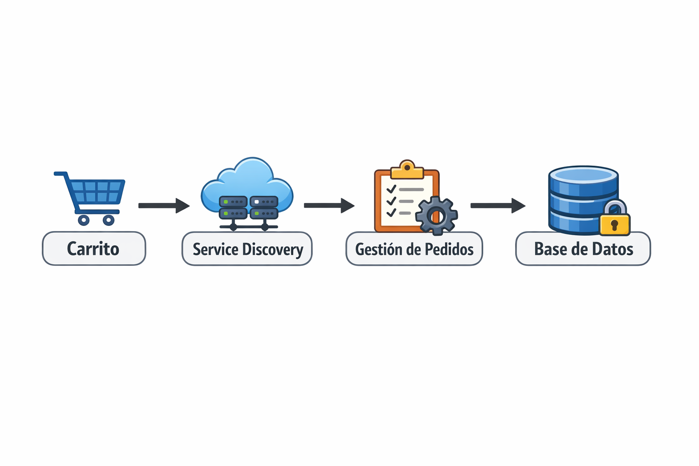

🌐 Actividad Clase 4
Comunicación entre Servicios + REST + Eventos + Service Discovery
Equipo: Juan, Jimmy, Diego, Kenny
Proyecto: JKD-Clothing
🪜 1. Interacciones entre Servicios
Interacción 1
Carrito
Gestión de Pedidos
ID del usuario, lista de productos, cantidad, precio total.
El pedido no se genera y el usuario recibe un mensaje de error. El
carrito conserva los productos para reintentar.
Interacción 2
Gestión de Pedidos
Catálogo / Inventario
ID del producto, cantidad vendida.
El inventario no se actualiza y podría venderse sin stock. Se debe
reintentar o registrar el error.
Interacción 3
Cliente (Frontend)
Servicio de Usuarios (Login/Registro)
Correo electrónico y contraseña.
El usuario no puede iniciar sesión y se muestra un mensaje de error.
🪜 2. REST o Eventos
| Interacción |
REST |
Evento |
¿Por qué? |
| 1 |
✔ |
|
El carrito necesita confirmación inmediata para saber si el pedido
fue creado.
|
| 2 |
|
✔ |
La actualización del inventario puede ejecutarse después como
evento "Pedido Creado".
|
| 3 |
✔ |
|
El login requiere validación inmediata para permitir acceso.
|
🪜 3. Síncrono o Asíncrono
| Interacción |
Síncrono |
Asíncrono |
Justificación |
| 1 |
✔ |
|
El usuario debe esperar confirmación del pedido. |
| 2 |
|
✔ |
La actualización de inventario puede ejecutarse en segundo plano.
|
| 3 |
✔ |
|
El usuario necesita respuesta inmediata para ingresar. |
🪜 4. Eventos Importantes del Sistema
1️⃣ Pedido creado
2️⃣ Usuario registrado
3️⃣ Producto actualizado por el administrador
🪜 5. Análisis de Fallos
Base de Datos
No se podrían consultar productos, iniciar sesión ni generar pedidos.
Puede continuar parcialmente mostrando catálogo en caché, pero no
permitir compras.
Replicación de base de datos, copias de seguridad, caché y monitoreo
automático.
🪜 6. Service Discovery
Los demás servicios no podrían encontrarlo si la IP está configurada
manualmente.
Consultando un servidor de Service Discovery que registre las
direcciones dinámicamente.
Permite que los servicios se encuentren automáticamente y facilita la
escalabilidad.
Entre Carrito, Pedidos, Catálogo y Usuarios para evitar depender de
IPs fijas.
🪜 7. Mini Diagrama
Dibujen:

💡 Ayuda rápida
REST → petición directa
Evento → algo ocurrió
Síncrono → espera respuesta
Asíncrono → continúa sin esperar
Service Discovery → permite encontrar servicios automáticamente